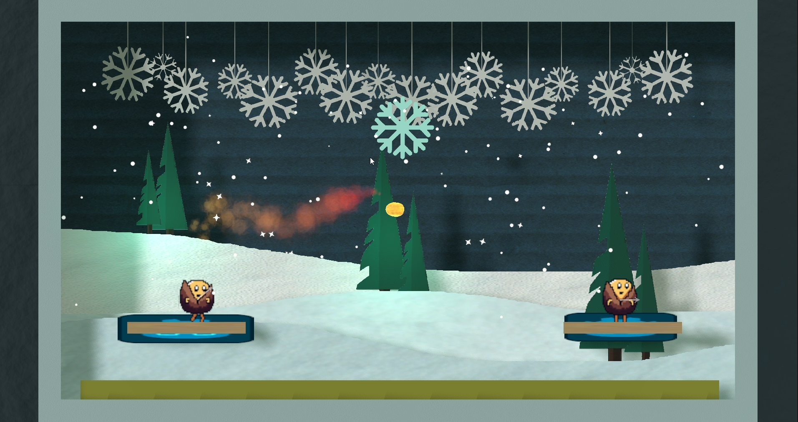

Hot Potato
I'm working on a couch co-op multiplayer game developed in Godot that’s about to be released on Steam. The game uses peer-to-peer (P2P) networking to allow players to connect and play together across the internet. To achieve this, I built a custom Steam Networking wrapper for Godot and even made changes to Godot’s C++ source code to accommodate the networking requirements. This project pushed me to explore low-level networking protocols and deeply integrate them into the game engine itself.
The multiplayer aspect of the game creates exciting, dynamic gameplay, allowing players to enjoy seamless co-op action from their couches or remotely. Developing a P2P system required a strong understanding of networking, real-time communication, and ensuring reliable gameplay across various network conditions.
This project has been a massive learning experience in both game development and networking. It’s been incredibly rewarding to bring a multiplayer experience to life, while overcoming the challenges of building a custom networking solution for Godot and Steam integration. Now, I’m excited to see the game reach players on Steam.